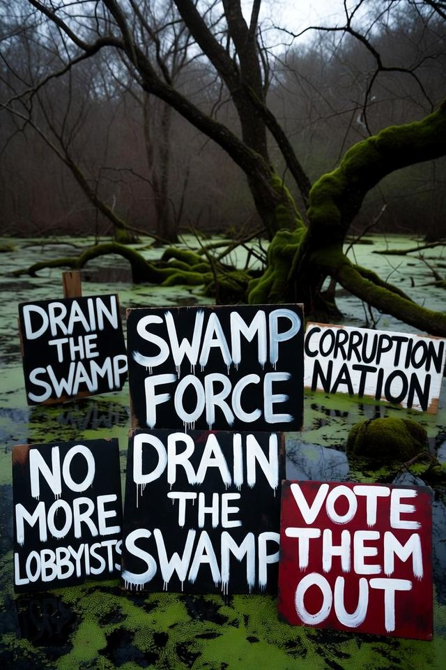

Journal · Congress · Aug 30, 2026 · 30-second read
What we can do

“A protest that stays peaceful is the republic working. A riot is their caption.”
The record Tap a card for the detail. Each one opens the source.
The First Amendment: speech, press, peaceful assembly, petition.U.S. Constitution
First Amendment — speech, press, assembly, petition
U.S. ConstitutionOpen the record ↗Article I, Section 5: each chamber can punish and expel members.U.S. Constitution
Article I §5 — punish and expel
U.S. ConstitutionOpen the record ↗Article V: amendments.U.S. Constitution
Article V — amendments
U.S. ConstitutionOpen the record ↗Read the full essay
The verified text, checked against primary records on Sep 24, 2026. Passages marked Our view are opinion.
Our view Politics will not fix a Congress that writes its own rules. A united people, peaceful, on the record — or it does not happen.
Our view The record is on the table. Forty trillion. Seven billion for a part-time floor. Two hundred dollars if they file the trade late. They divided a nation so the public would fight the neighbor and never look at Congress. Politics — the jersey, the panel, the clip — is not going to fix a Congress that writes its own ethics. The people who would vote away their own perks will not. That is the whole problem in one sentence.
Our view What is left is a united America that stops fighting itself. Arendt: power is people acting in concert. Isolation is how a republic is lost. The villain is not the other jersey. The villain is Congress. If we keep the fight they sold us, they keep the calendar.
Peaceful. On the record. That is the law.
- The First Amendment is the tool they cannot take without eating the document: speech, press, peaceful assembly, petition for a redress of grievances. constitution.congress.gov ↗ A protest that stays peaceful is the republic working. A riot is their caption. We do not give them the caption.
Our view - Demand prosecutions where the elements are actually on the paper — STOCK Act, bribery, false statements, the statutes that already exist — not a jersey hunt, not a word the Constitution reserved for war. A caption is not an indictment. We have already refused to fake treason. We will not fake a roundup either. Apply the law. In court. On the record.
Our view - The midterms are the priority. November 3, 2026. Show up. Every American. Then we remove the swamp one seat at a time, as needed — primary, ballot, expulsion where the House will do it. DSA does not need a stronger foot in Congress. Not a riot. A line.
Our view - Demand the change they will not write: full-time work or the perks end; they do not set their own pay, pension, or ethics; twelve bills by October 1; an amendment with term limits and a citizen board that also goes home. Article V is the door. Article I, Section 5 is censure and expulsion.
Our view - Show up with the file, not a costume. One number. One statute. One neighbor who used to be the enemy. That is how a nation is pulled back together.
Our view - This journal does not call anyone into a street to break a window. It does not call anyone to lay hands on an employee. It names Congress, prints the tape, and names the lawful instruments. Concert, not a mob.
The thought about sitting down
Our view The leverage is already known. The country does not open because a committee gavels. It opens because people clock in — trucks, power, harvests, clinics, classrooms. Congress needs those people more than those people need Congress. That is why a donor who stopped writing checks and started closing problems terrified them. A week where the people who actually run it sat down would be felt in the building. It would also be felt first in a neighbor's refrigerator, in a hospital shift, in a paycheck. The syndicate has a pantry. The people who clock in do not. They would name the dark week the word they already ran without filing the statute. We would have given them the picture.
Our view This journal does not call a national sit-down. It does not tell anyone to walk off a public job, ground an airplane, or starve a town to punish a committee. Concert is not a blackout. The fact still stands: they are trying to take a country they do not know how to run. Remind them at work by doing the work and withholding the consent — the vote, the primary, the peaceful petition, the file in a stranger's hand — not by turning out the lights on the people who never sat in the chamber. Power is acting in concert. A republic that sits down on itself is their caption. A republic that stands together and demands the prosecutions the statutes support, and the full-time job they already billed us for, is the hilt. Use that.
Our view If politics could have done it, the calendar would already look like a job. It does not. So the people who still clock in — the ones who kept the country opening while the club got comfortable — stand together, peaceful, and demand the prosecutions the statutes support and the change the oath required. Not against each other. Against Congress. That is how this continues. That is how it stops being a clip.
Receipts
- First Amendment — speech, press, assembly, petition — constitution.congress.gov ↗
- Article I §5 — punish and expel — constitution.congress.gov ↗
- Article V — amendments — constitution.congress.gov ↗